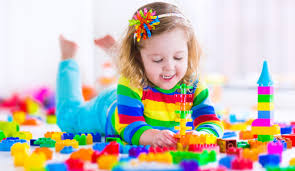
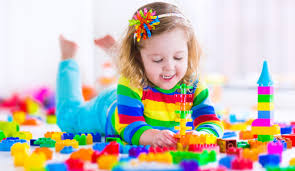
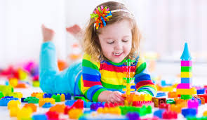

 

Rainbow Play Therapy provides play therapy for concerned parents/carers in a safe, warm environment with a nurturing voice; helping them feel happy,stress-free as a result of their transformed child.
I will use this color and this: to give a brightish kind of feel, but also not too bright. I would maybe put a lighter overlay on.
the only icons i would use would be contact icons such as qand one for comments b.
The following images are child therapy related and would be appropriate to include:

i would consider including this as texture: .
.
I would use this font for the main and this one for the heading/s.
The tone would be proffessional yet simple. Giving over the message that the parent can be confident enough in this therapist to send his child to her. It would sound caring and nurturing.